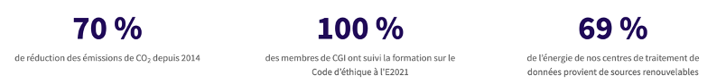

En CGI, on reconnaît que le domaine de l'informatique est une source importante, c'est pour cette raison qu'on essaye de promouvoir la transition au niveau de nos clients, et de nos communautés. On travaille pour soutenir un vaste éventail d'initiatives environnementales visant à protéger la planète pour les générations futures.
Quelques chiffres sur nos progrès effectués :
Le pouvoir de l’unification : les experts de CGI se joignent à des dirigeants d'entreprise et universitaires pour évoquer les changements qui s'opèrent dans le secteur de fabrication de matières premières en raison de la transition énergétique. La mise en place d'opérations de fabrication durables passe par un système énergétique efficace. Peter Warren, vice président et responsable sectoriel mondial de CGI, suggère qu'il faudra non seulement utiliser des formes d'énergie alternatives, mais aussi acheter et créer plus d'énergie locale pour réussir à devenir neutre en émission de carbone.